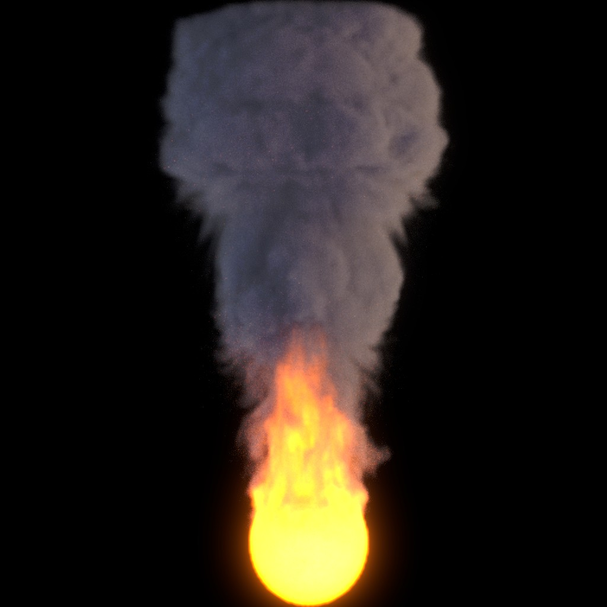

Give a high-level overview of what you implemented in this project. Think about what you've built as a whole. Share your thoughts on what interesting things you've learned from completing the project.

Particle Simulation. We are trying to solve the problem of representing certain particle movement. In this case, we want to simulate the movement of fire in a 2D space.
This problem is important because in animation, there are many times we want to model specific environments (such as snow falling, rain, etc.). Fire movement can be applied to different scenes, and used in animations.
We are going to solve this problem by creating a simulation of fire. We will implement the fire movement using Navier-Stokes equations of fluid dynamics and then apply a shader on top to make the simulation look like fire (instead of smoke).